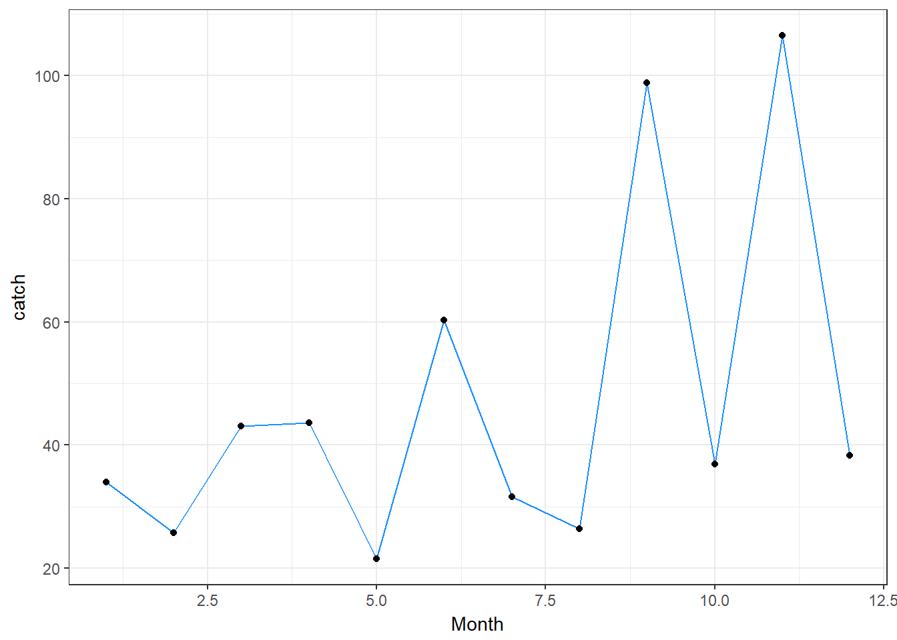
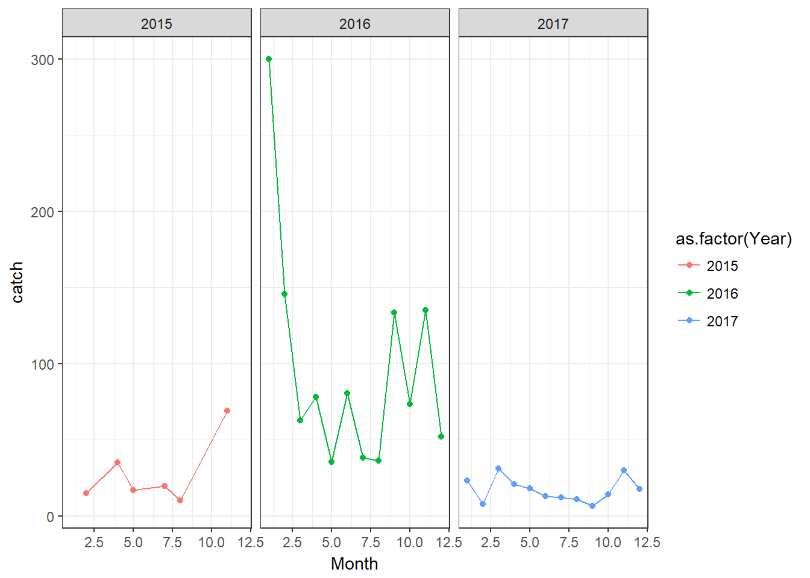
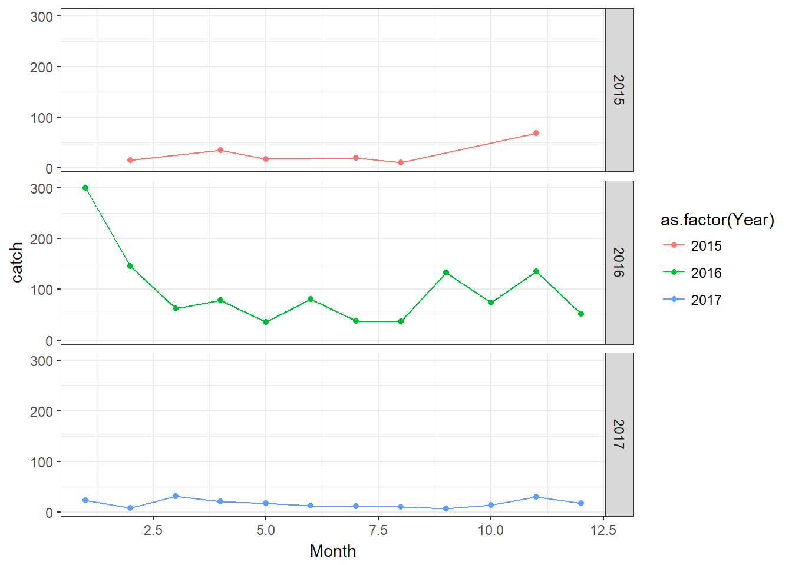
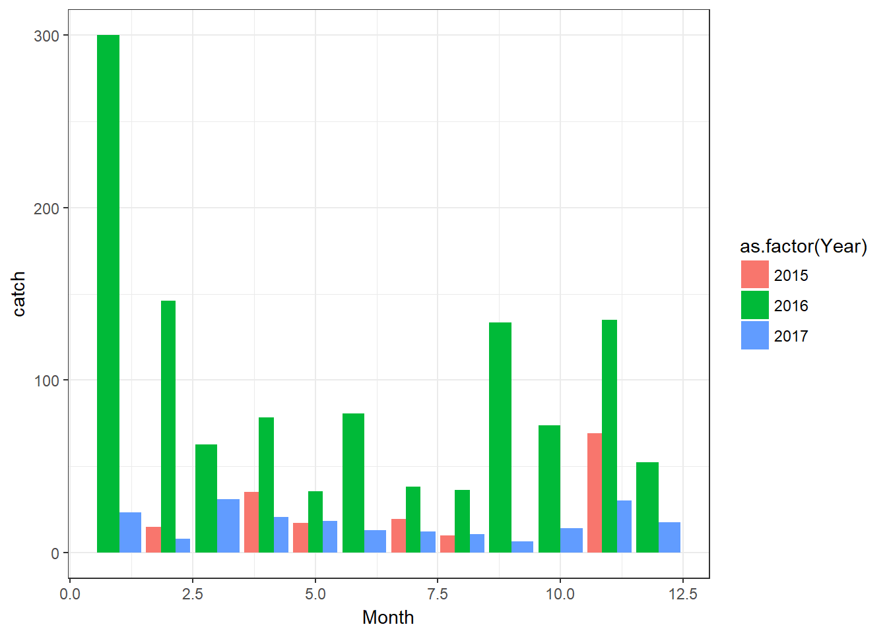
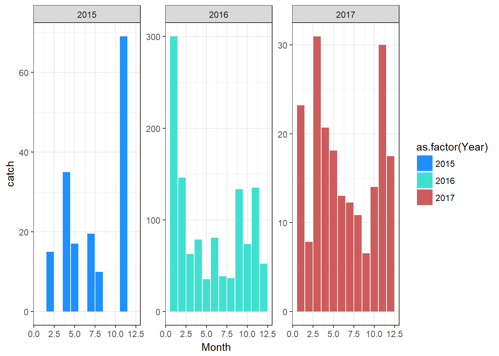
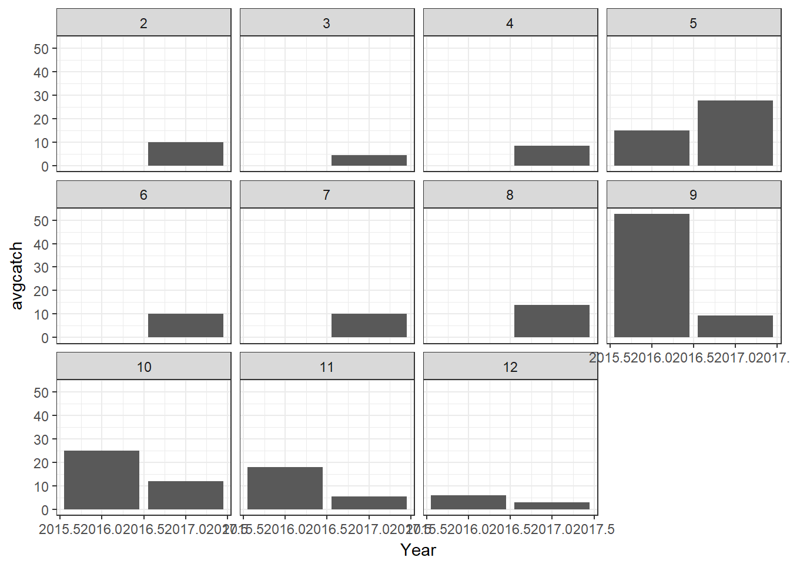

options(stringsAsFactors = FALSE) # turn-off character as factors
library(tidyverse)
library(lubridate)
## Loading my data
vanuatu.dat <- read.csv('Datasets/Vanuatu report 65.csv')
van1 <- dplyr::select(vanuatu.dat,
trip_date, sp_name, sp_code,
catch_n=sp_n, catch_kg=sp_kg)
focussp <- "DEEPWATER RED SNAPPER"
van1$datefrm <- mdy_hms(van1$trip_date)
van1$Month <- month(van1$datefrm)
van1$Year <- year(van1$datefrm)
vanfilt <- van1 %>% filter(sp_name==focussp)
moncatch <- vanfilt %>%
group_by(Month) %>%
summarise(catch=mean(catch_kg),
catchsd=sd(catch_kg),
maxn=max(catch_n))theme_set(theme_bw())
ggplot(moncatch, aes(x=Month, y=catch), size=2) +
geom_line(colour='dodgerblue') + geom_point() Common error message: invalid argument to unary operator
Show the monthly catch by year, for 2015, 2016 and 2017
names(vanfilt)## [1] "trip_date" "sp_name" "sp_code" "catch_n" "catch_kg" "datefrm"
## [7] "Month" "Year"ymoncatch <- vanfilt %>%
group_by(Month, Year) %>%
summarise(catch=mean(catch_kg),
catchsd=sd(catch_kg),
maxn=max(catch_n)) %>%
filter(Year %in% 2015:2017)
unique(ymoncatch$Year)## [1] 2016 2017 2015ymoncatch## # A tibble: 30 x 5
## # Groups: Month [12]
## Month Year catch catchsd maxn
## <dbl> <dbl> <dbl> <dbl> <dbl>
## 1 1. 2016. 300. NaN 50.
## 2 1. 2017. 23.2 11.5 13.
## 3 2. 2015. 15.0 NaN 7.
## 4 2. 2016. 146. 81.1 55.
## 5 2. 2017. 7.84 11.9 22.
## 6 3. 2016. 62.6 73.7 50.
## 7 3. 2017. 31.0 28.2 18.
## 8 4. 2015. 35.0 15.6 24.
## 9 4. 2016. 78.3 103. 100.
## 10 4. 2017. 20.7 18.1 19.
## # ... with 20 more rowsNow let’s make the plot: To make panels, use facet_wrap()
theme_set(theme_bw())
ggplot(ymoncatch, aes(x=Month, y=catch, colour=as.factor(Year))) + geom_point() + geom_line() + facet_wrap(~Year)
Plotting with panels in rows intead, use the function facet_grid() (can also use facet_wrap with ncol=1)
theme_set(theme_bw())
ggplot(ymoncatch, aes(x=Month, y=catch, colour=as.factor(Year))) + geom_point() + geom_line() +
facet_grid(Year~.)
Plotting with a barplot instead of lines
ggplot(ymoncatch,
aes(x=Month, y=catch, fill=as.factor(Year))) +
geom_bar(stat='identity', position='dodge')
Mixing up barplot with panels
ggplot(ymoncatch,
aes(x=Month, y=catch, fill=as.factor(Year))) +
geom_bar(stat='identity') +
facet_wrap(~Year, scale='free_y') + theme_bw() +
scale_fill_manual(values=c('dodgerblue', 'turquoise', 'indianred'))
From the Vanuatu dataset, make a month-panel bar plot of the annual average catch (kg) for dogtooth tuna (all years before the future).
catch by year and month
# find out how dogtooth tuna is referred to in sp_name column
# unique(grep('TUNA',van1$sp_name, value=TRUE))
dogt <- van1 %>%
filter(sp_name == 'DOGTOOTH TUNA') %>%
group_by(Year, Month) %>%
summarise(avgcatch=mean(catch_kg)) %>%
filter(Year < 2019)Make the plot now that I have created my dataset dogt
ggplot(dogt, aes(x=Year, y=avgcatch)) +
geom_bar(stat='identity') + facet_wrap(~Month) +
theme_bw()
Copyright © 2018 Pacific Community. All rights reserved.